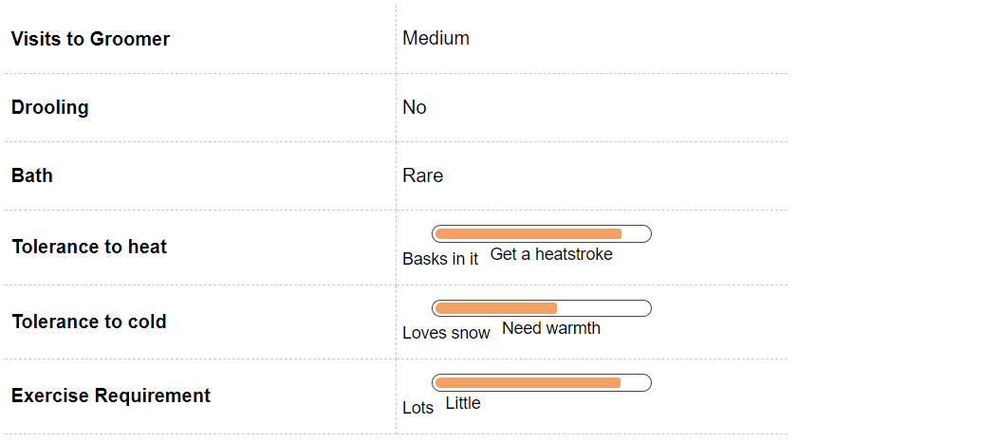
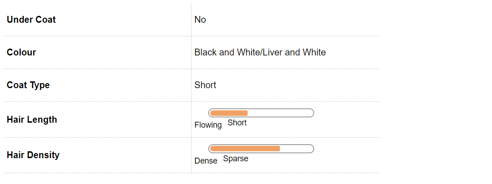
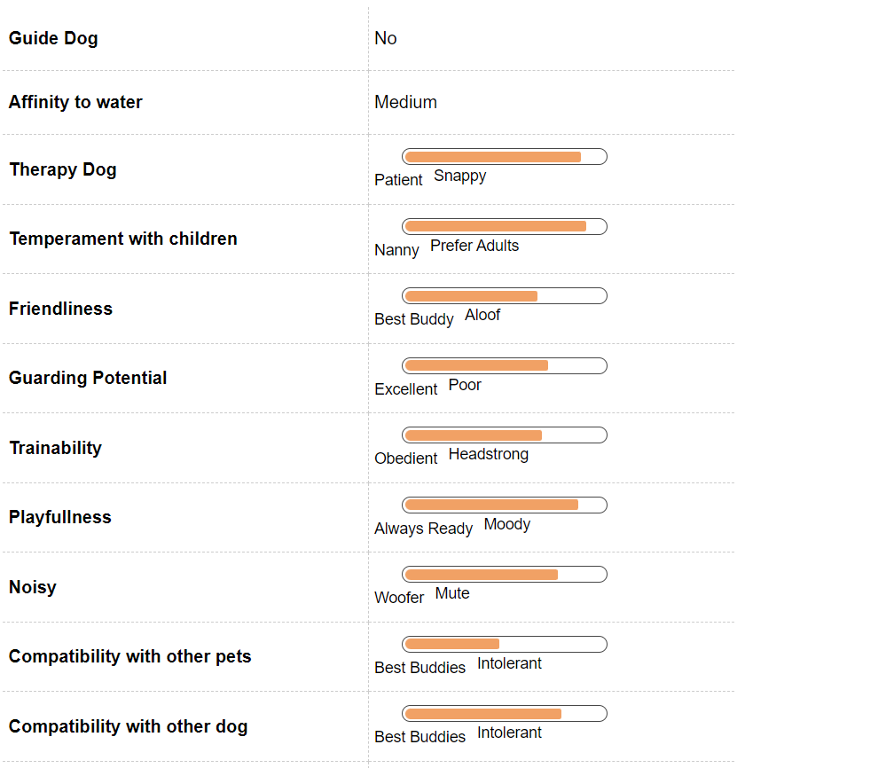
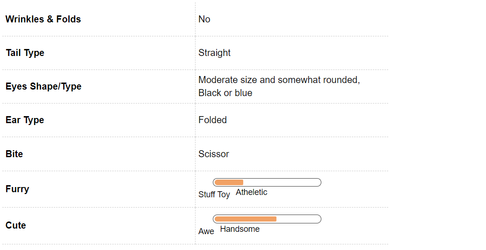

Dalmatian Dog Breed Information
Introduction
When one thinks of a quirky looking dog, a Dalmatian comes straight into the mind. These lovable, large sized white dogs are one of the best known and well recognised dogs in the world. Adorable to look at and with an aura of a Mascot, Dalmatians were one of the first breeds that former President George Washington bred himself.
Dalmatians gained popularity after they were featured in the Disney movies 101 and 102 Dalmatians. Some of the famous celebrities such as Marlon Brando, Paula Abdul, Gloria Estefan, Melanie Griffith, Marc Jacobs, Yves St. Laurent and Michael J Fox are the proud owners of Dalmatians.
If you are a proud owner of this energetic breed or if you are planning to get a Dalmatian as a family pet, you are making an exciting decision. We bring to you all the aspects that you will have to keep in mind before getting a Dalmatian so that you are able to provide an environment that develops a healthy dog and a long lasting companionship.
History
Though their origins are vague, many historians link the origins of the breed back to ancient Egypt where ancient cave paintings depict a white spotted dog accompanying the warriors and the farmers. Spotted dogs are also known to have travelled with the nomadic bands of gypsies, however they obtained their name in Dalmatia, a province on the eastern shore of Croatia.
In ancient pictures and paintings in England, Dalmatians were developed as coaching dogs i.e. dogs that would accompany people who rode in coaches and protect the horses and the travellers from any danger and make way for the coach especially in crowded streets .
Carriage dogs were also bred as war dogs and guard dogs but gained more popularity as a coach dog
In the United States, Dalmatians have become a mascot for Firehouses. In 1882 an unofficial standard for the breed was introduced by Vero Shaw. The breed’s unique coat became popular and was distributed widely over the continent.
Unique Aspects
One of the most unique features of a Dalmatian are the unique spots. Dalmatian puppies are not born with spots. As they mature, the spots become more prominent. For some dogs, the spots may be scattered, while for others the entire body will be covered in spots. The Dalmatians have a lot of spots, even at the insides of their mouth.
Dalmatians are blessed with a stocky body and strong muscles. The strong muscular body helps the dogs run with ease and does not tire them at all. Dalmatians are also known to be selective listeners and extremely independent and stubborn in nature.
Another unique aspect of the Dalmatian is their weak urinary tract and high susceptibility of developing bladder stones. Pet parents to a Dalmatian will have to be careful about the diet that they give to their Dalmatian and also ensure that their dog is taken out to relieve himself / herself often so as to flush out all the toxins from the system.
Fun Trivia

Dalmatians became a rage soon after the introduction of the cartoon series of 101 Dalmatians. There has been no looking back ever since then, they have just garnered popularity ever since. Getting home a Dalmatian is like bringing home your very own celebrity. Here are some of the famous celebrities and movie and brands that you share your little and agile celebrity with
Movie Character
Whenever we talk about movies featuring Dalmatians the first name that crops to the mind is the 101 Dalmatian. After all how many dogs get a movie title on their name. After the grand success of the Disney series by the same name. This handsome breed played the protagonist in both the 101 and 102 Dalmatians. In addition to this they are almost synonym with Anheuser Busch brand, the beer wagon always has a Dalmatian coach dog with it at all times.
Celebrity Dalmatian owners
Dalmatians are a rage across the world and the celebrities are no exception. This includes a prolific list of Martha Washington, wife of George Washington it is believed that he brought the breed to the United States. In addition to this Melissa Joan Hart of Sabrina the teenage witch fame also has a Dalmatian.
Vital Stats:
Dog Breed Group:
Utility Dogs
Height:
20-24 Inches
Weight:
22-25 Kg
Life Span:
10 to 12 years
Pros and Cons
| Pros |
Cons |
|
Loveable and quirky looking
|
Need specialized food for urinary tract
|
|
Energy bundles and love to play
|
Has to be trained right from puppyhood
|
|
Excellent watch dog
|
Needs regular exercise
|
Dalmatian Maintenance & Effort

Grooming
Dalmatians are one of the easiest breeds to groom. Blessed with short coat, the spots on a Dalmatian come in two different colours - black or dark brown (liver) on a white base fur. They also come in a lemon (yellow) coloured spots but that is uncommon and not widely recognized.
The coat of a Dalmatian requires minimal grooming and often they are known to groom themselves just like cats do. Even though Dalmatians can shed quite a bit, the absence of an underfur ensures that there is not fur in the house.
Dental grooming is also a must for the Dalmatians. Regular brushing will ensure that there is no tartar or plaque buildup and the mouth of the Dalmatian remains clean and there are no chances of the onset of any periodontal problems.
To avoid any injury to the feet especially during running or playing, it will be advised that the nails of the dog are regularly trimmed and kept short. Cleaning of ears using ear wipes will also help avoid any ear infections or wax buildup.
While grooming, check for any rashes or redness in the skin, especially between the paws and the ears. A good grooming regime begins from an early age. Introducing your dog to dental, grooming and bathing regimes will ensure that the puppy gets accustomed to the routine and is comfortable with it
Dalmatian Hair & Coat

Dalmatian Health & Care
Common Health Issues
Once the breed gained importance, there was a rise of puppy mills. The indiscriminate breeding led to the rise of aggressive temperament. However, with the right breeding and socialisation, temperamental issues can be avoided.
Dalmatians are generally a healthy breed of dog. However, before getting a new puppy it will be advised that all medical history of the parents of the pup is referred to rule out any genetic or hereditary disorder that might inflict the pup.
Hereditary deafness-
According to research, approximately 8% of Dalmatians are born deaf and about 22 - 24% are born with hearing in one ear only. It is an inherited trait and may be passed on to the puppies. To test of a puppy is deaf or not, a BAER (Brainstem Auditory Evoked Response) is a suggested test. Before adopting a Dalmatian puppy, do make sure to check the medical history of the parents of the pup especially for deafness.
Urinary Tract Stones -
The urinary tract of a Dalmatian is designed in a unique way making them highly susceptible to developing urinary tract stones. The high level of uric acid in their urine is the main cause for the development of the stones. Small stones may pass in the urine, while large stones may get lodged in the tract. If not treated on time, the stones can prove fatal for the dog. As pet parents one would have to ensure that their Dalmatian receives less proteins in their diet and that there is ample water and provision for open area for the dog to relieve themselves.
Skin Allergies: -
Due to their white colour, dalmatians are extremely prone to developing skin allergies. Medical intervention will be required for the management of the allergies.
Hip Dysplasia -
Hip Dysplasia is a genetic disorder where the hip bone has a defect in connecting with the hip joint as a result of which the dog may experience pain or lameness in either of the rear legs. As the dog grows, he/she may also develop arthritis. Before getting a puppy, check the medical documents of the parents to rule out hip dysplasia.
Iris Sphincter Dysplasia: -
Iris Sphincter Dysplasia: It is an inherited disorder can cause sensitivity to bright light and may lead to full or partial blindness and development of cataracts.
Dalmatian Behavior

Temperament
Due to the rise of their popularity after the release of Disney’s 101 Dalmatians, there was a sudden increase in the demand for the breed. Breeders began indiscriminate breeding of the dog and that led to the development of puppy mills. The breeders were not careful enough of the breeding and this led to the rise of aggressive bloodlines.
If bred the right way, dalmatians are a happy, lovable and highly energetic dogs. If you are a runner or have jogging as a part of your daily regime, Dalmatians will fit right in. They love to run about and play and it is one of the best ways for them to expend their energy. Owners who will not be able to spend adequate amount of time with their Dalmatian puppy should not consider this breed as a pet. The lack of exercise can lead to destructive behaviour such as chewing on furniture or digging in the yard.
Like all dog breeds, early socialisation with children, other human beings and pets will ensure a well developed and gentle temperament.
Environment
Dalmatians are wonderful energetic pets and require a lot of space to move about and play. However, pet parents who live in an apartment will have to ensure that their dog is getting ample amount of exercise everyday to expend the excess energy and to stay healthy. Due to their large size, Dalmatians may knock small pets or children and even things off while they are exploring around the house.
Dalmatians are sensitive to extreme cold. If you live in a place where the temperatures during winters may fall considerably, pet parents will have to take extra precaution to keep their puppies warm.
Training & Intelligence
Dalmatians are extremely independent and intelligent in nature and require strong leadership and constant human companionship to stay in control. If you are a first time owner, you might want to seek the help of a professional canine behaviorist to understand how to train the puppy.
Dalmatians require patient, consistent and gentle training from an early age. Blessed with a high intelligence, Dalmatians are quick to pick up commands and train. However, they do not like to be mistreated and be stubborn at times. Historically Dalmatians were trained to run alongside the coaches to protect the passengers and the horses.
Now they are being trained to be watch dogs and also for obedience, agility for various dog shows. Dalmatians are sensitive in nature and do not respond well to harsh training. Their training has to be associated with positive reinforcement methods. With a strong and firm training, Dalmatians can be the most wonderful playmates and pets.
Dalmatians are also known to remember mistreatment and harsh behaviour. Pet parents will have to be gentle with their Dalmatian puppies.
Dalmatian Breeding
Procreation
Dalmatians are a healthy and sturdy breed and become mature by the age of 18 months. If you are going to mate and breed your Dalmatian, make sure that you understand thoroughly the medical histories of his/her mating partner and also the medical history of the Dalmatian’s parents so make sure that they are not suffering from any serious genetic disorder that may be deterrent to the overall growth of the new puppies.
If you are a first time pet parent, seek medical advice to ensure that the mating and breeding process is comfortable for both the dogs.
Puppies
Dalmatians are known to have large litter sizes. Many a times an average litter size could be as large as 15 puppies. When born, the puppies are white and develop spots as they grow old.
When the puppies are born, it will be imperative to vaccinate them and to train them from early on as they are extremely active and if not monitored may destroy furniture and other things that might catch their attention.
Dalmatian Appearance

Body
Dalmatians belong to the large breed of dogs and have a large strong muscular body. The skull is wide and long with a well defined moderate stop. The nose may be black / brown or dark grey in colour. The jaw meets in a scissors bite.The eyes of a dalmatians may be brown or blue or grey in colour and the ears are set high tapering to the tip. Dalmatians have a deep chest and a long tail. The body is covered in short white fur with black or brown spots.
A fully grown Dalmatian male will stand anywhere between 22 - 24 inches while a fully grown females can be as tall as 20 - 22 inches. On an average Dalmatians weight upto 25 kgs. The males are slightly bigger than the female dogs. The legs of Dalmatians are strong and sturdy with round feet and well arched toes.Tail should be never docked and carried with a slight upward curve but should never curl over the back.
.webp)